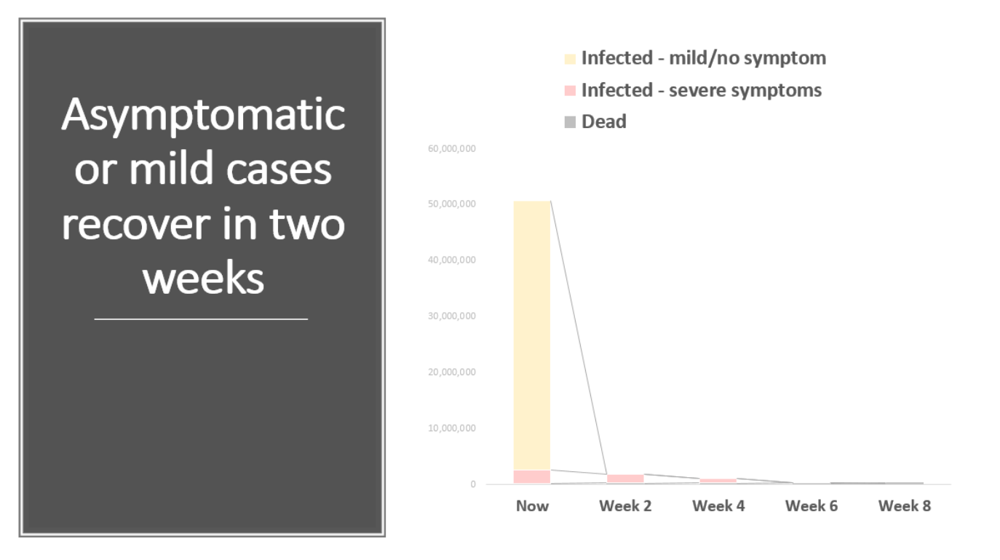
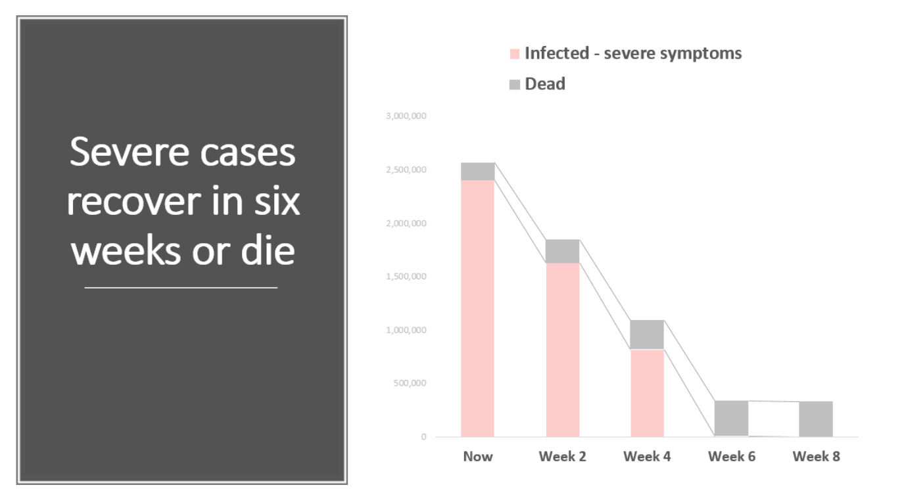

Shorten the Curve
April 2020
New COVID-19 cases are emerging in tens of thousands four months after the initial outbreak in China in December 2019. The virus has led to the greatest recession since the 1930s: tourism and hospitality tanked, consumers quarantined, millions of jobs lost, global supply chain disrupted, capital investment stemmed, stock markets volatile and people depressed from being indoors for weeks.
Everyone is unsure how long it will take for a vaccine, treatment or contact-tracing technology to be broadly adopted. 6 months? 12 months? 18 months? Until then, the virus will continue to haunt the confidence to reopen the economy. Countries who argue to reopen early cannot solve (A) consumers’ FOGO or “fear of going out”; (B) isolate their economy from the rest of the world; (C) growing deaths and illnesses.
More than ever, the world needs political leadership and decisiveness, so every country acts concurrently to flatten and shorten the curve (read: slapping the faces of any country that only loosely quarantines or prematurely reopen their economy).
Imagine – The world economy shuts down simultaneously. Citizens stay home to minimize physical contact with one another. The ones already infected with COVID-19, asymptomatic or not, recover at home or in a hospital. Overseas citizens remain where they are. New cases are rigorously investigated. Medical staff stay on-premise and have the necessary equipment (e.g. N95). Essential services are contactless. Payments stop, including mortgages, commercial loans, rent/lease, etc. Governments support low-income families or vulnerable businesses.
In this scenario, the world would beat the virus and reopen the economy in only 8 weeks. See graphs:
 
Note: The analysis assumes that unreported, mild or asymptomatic infections represent 20 times reported cases, 2 weeks of incubation, 2 weeks of recovery for mild infections, 6 weeks of recovery for severe infections, 6% of severe cases die within 6 weeks, and the world population grows at 1.1% per year.
Now is the time when conformity trumps civil-liberty, tough-love social-niceties, and autocracy democracy.
Bill Gates said, “…what we need is extreme shutdown, so that in six to ten weeks if things go well, you can start opening back up” in this Ted Talk (16:00), which I could not agree with more.